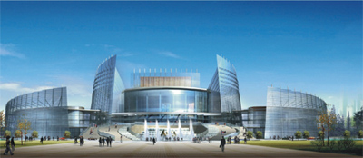

 福建大剧院是“十五”期间福建省社会事业的重点建设项目，也是迄今为止福建省最大的文化基础设施项目。福建大剧院坐落于福州市中心五一广场的中轴线上，其总投资为3.6亿元人民币，投资性质为政府财政拨款，建筑面积为29,912平方米，高度为22.8米。它由一个1346座位的大剧院、一个483个座位的多功能剧场以及附属设施组成。福建大剧院投入使用后将能满足国内外各类歌剧、舞剧、音乐剧、大型歌舞、戏曲、话剧等大型舞台类演出的使用要求。
福州大剧院作为现代化的高层次表演场所，建成后将成为我国东南中心城市公共文化设施的又一璀璨亮点；成为提升福建市的城市形象和吸引各方游客的标志性建筑，也是对外宣传的一个重要窗口。
福州大剧院网络灯光系统大量采用具有现代水平的舞台智能化和自动化控制设备。这些设备都采用成熟技术，成熟产品、最新工艺，使灯光系统的技术水平与性能、参数达到国际先进水平。
整个控制系统配置了具有高安全性，操作简便的大型调光设备和以光纤网络为主的信号传输系统，从而构成了具有丰富舞台表演手段并极具特色的综合性多功能大剧院。
福建大剧院灯光控制系统总服务器，与各个独立剧场的灯光网络系统一起形成舞台灯光网络控制系统。通过总服务器可实现对各个剧场的独立灯光网络控制系统进行集中监测、相互热备份和相互控制。同时使处于不同区域的剧场灯光设备之间实现信息资源共享、远程操控和管理的功能。
灯光网络控制系统采用以光纤作主干道进行远距离网络传输，无线和DMX作辅助网络传输控制，整个控制系统严格遵循TCP/IP通讯协议及USITT DMX512/1990。并符合ACN和ART-NET协议，也就是说在本系统所选配的主要灯光设备（如调光台、调光器）中同时具有DMX和ACN和ART-NET标准网络接口。DMX-512标准协议主要保证灯光设备之间的控制信号稳定可靠地传递，而ACN和ART-NET标准协议是在保证控制信号稳定可靠地传递的前提下，稳定可靠地双向传递系统中大量其它监测、相互通讯和反馈TCP/IP协议信号。它允许不同厂家的灯光控制设备间能够相互通讯和操作。它将在灯光系统的技术管理、业务管理和安全消防管理发挥极其重要的作用。
灯光控制系统形成环形分布，剧场信号集中于控制室，通过集线器分布以太网节点，数据传输介质采用光纤以太网信号；通过DMX终端节点实现以太网控制信号与DMX信号的相互转换，通过DMX信号分配器分布剧场DMX信号节点。灯光网络配置要求具备专用的网络配置软件，能对网络中各个信息节点统一配置、修改。
整个灯光网络还具备以太网控制、DMX控制、无线遥控、有线遥控，并能接入场灯控制系统以及环境照明控制系统。
剧场灯光网络均接入大剧院主干网络形成大剧院灯光系统网络,网络连接、数据共享通过大剧院主干网络中的交换机实现。
在系统中允许不同品种、品牌的调光台、电脑灯控制台、换色器控制台或其它舞台效果的DMX512、RJ45网络接口除满足所有网络控制台和其它网络设备的接入。整套网络中可在任一工作站连接点，方便用户在任意空间的使用网络控制设备来操作舞台灯光设备；另外可用无线网络系统对舞台灯光设备进行控制。操作起来更加得心应手，大大节省用户在装台过程中的人力和时间。